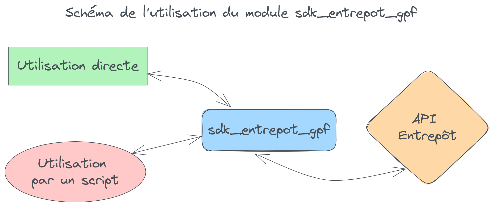

SDK Python#
L'API Entrepôt Géoplateforme vous permet de téléverser, traiter puis publier vos données géographiques. Bien que très puissante, cette API n'est pas aisée à prendre en main. Ce module Python a été créé afin de vous permettre d'utiliser la Géoplateforme facilement.
Vous pouvez l'utiliser directement en ligne de commande pour un usage simple ou l'intégrer dans vos scripts Python pour un usage avancé entièrement personnalisable.

Installation#
Installez le module via pip :
Vous pouvez ensuite l'utiliser comme exécutable ou l'importer dans vos scripts Python.
Tutoriels#
Des tutoriels sont disponibles pour voir des cas concrets d'utilisation de A à Z :
- Tutoriel 1 : héberger une archive pour la rendre téléchargeable
- Tutoriel 2 : téléverser des données vecteur et les publier en flux
- Tutoriel 3 : téléverser des données raster et les publier en flux
Développement#
Si vous souhaitez participer au développement du projet, consultez le document détaillant comment procéder.